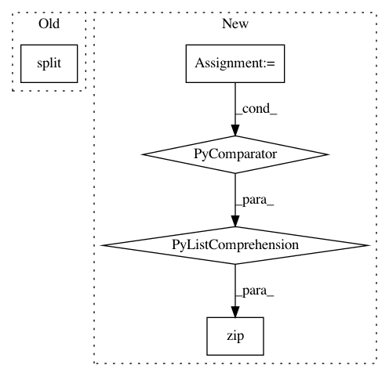

71924fbd68f1e0353f1c128fc21d57d9b70e1f8e,jaxnerf/nerf/datasets.py,LLFF,_generate_rays,#LLFF#,264
Before Change
super()._generate_rays()
rays_o, rays_d = np.split(self.rays, 2, axis=-1)
near = 1.
viewdirs = rays_d
// Shift ray origins to near plane
After Change
super()._generate_rays()
origins = self.rays.origins
directions = self.rays.directions
viewdirs = directions
near = 1.
// Shift ray origins to near plane
t = -(near + origins[Ellipsis, 2]) / directions[Ellipsis, 2]
origins = origins + t[Ellipsis, None] * directions
// Projection
o0 = -1. * ((2. * self.focal) / self.w) * origins[Ellipsis, 0] / origins[Ellipsis, 2]
o1 = -1. * ((2. * self.focal) / self.h) * origins[Ellipsis, 1] / origins[Ellipsis, 2]
o2 = 1. + 2. * near / origins[Ellipsis, 2]
d0 = (-1. * ((2. * self.focal) / self.w) *
(directions[Ellipsis, 0] / directions[Ellipsis, 2] -
origins[Ellipsis, 0] / origins[Ellipsis, 2]))
d1 = (-1. * ((2. * self.focal) / self.h) *
(directions[Ellipsis, 1] / directions[Ellipsis, 2] -
origins[Ellipsis, 1] / origins[Ellipsis, 2]))
d2 = -2. * near / origins[Ellipsis, 2]
origins = np.stack([o0, o1, o2], -1)
directions = np.stack([d0, d1, d2], -1)
self.rays = Rays(origins=origins, directions=directions, viewdirs=viewdirs)
// Split poses from the dataset and generated poses
if self.split == "test":
self.camtoworlds = self.camtoworlds[n_render_poses:]
split = [np.split(r, [n_render_poses], 0) for r in self.rays]
split0, split1 = zip(*split)
self.render_rays = Rays(*split0)
self.rays = Rays(*split1)
def _recenter_poses(self, poses):
In pattern: SUPERPATTERN
Frequency: 3
Non-data size: 5
Instances
Project Name: google-research/google-research
Commit Name: 71924fbd68f1e0353f1c128fc21d57d9b70e1f8e
Time: 2020-12-29
Author: barron@google.com
File Name: jaxnerf/nerf/datasets.py
Class Name: LLFF
Method Name: _generate_rays
Project Name: OpenNMT/OpenNMT-py
Commit Name: d6e8ea4250b2a48262bae0276047371ea2dcccf1
Time: 2018-06-15
Author: vince62s@yahoo.com
File Name: onmt/utils/loss.py
Class Name:
Method Name: shards
Project Name: OpenNMT/OpenNMT-py
Commit Name: ab89e458bdec863f2dc2f7232ffd38d49758b31a
Time: 2018-06-08
Author: srush@seas.harvard.edu
File Name: onmt/Loss.py
Class Name:
Method Name: shards